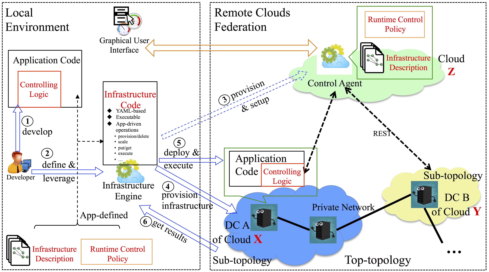

Overview¶
What is CloudsStorm?¶
CloudsStorm is a framework for managing an application-defined infrastructure among public IaaS (Infrastructure-as-a-Service) Clouds. It enables the application to customize its underlying infrastructure at software development phase and dynamically control it at operation phase. To be specific, the advantages and features are as follows:
- Programmable: The underlying Cloud virtual infrastructure can be customized and programmed at software development phase to fit the application requirements. Furthermore, the connection topology with a private network can also be defined in advance.
- Controllable: CloudsStorm leverages the minimal function provided by Cloud and affords high-level controllability, including failure recovery, auto-scaling, etc. Therefore, the infrastructure can be easily controlled by the application at operation phase.
- Interoperable: CloudsStorm is able to manage virtual infrastructure among federated Clouds. Hence, this is not a vendor lock-in solution.
- Reusable: We propose “infrastructure code” to describe dynamic operations on the infrastructure, instead of only static infrastructure description or deployment plan. It is able to define and automate all processes including provisioning, deploying, executing and releasing. This code is reusable and the entire process is reproducible, as long as you have a budget to access the Cloud.
How does it work?¶
This is the framework overview.
In this framework, there are three kinds of code, including infrastructure code, application code and runtime control policy. Cloud applications need only leverage these to control the whole lifecycle of the infrastructure their applications rely on, including phases of provisioning, deployment, auto-scaling and destruction. Among these code types, the infrastructure code is the core of the framework. It first allows application developers to describe the infrastructure fit for the application. It also includes the network topology. Then it indicates which execution code should be running on which node of the infrastructure. The execution code is the part that the application developer should initially focus on. It is the main logic for the Cloud application. The difference here is that the controlling logic can be embedded in the execution code to allow the application to directly control the infrastructure on demand. At last, the infrastructure code defines the runtime control policy for dynamically managing the infrastructure at runtime.
How about learning more?¶
- Documentation: https://cloudsstorm.github.io/
- Downlond release: https://github.com/CloudsStorm/Standalone/releases
- GitHub repository: https://github.com/zh9314/CloudsStorm
- We present a poster about CloudsStorm at ICT OPEN 2018 in the Netherlands (See Poster).
How about participating?¶
Questions, comments, some testing credential requests, bug reports, etc. can be directed to:
- my email: h.zhou@uva.nl
- issues on GitHub
Since this is an ongoing work. Patches and collaborations on the software are much appreciated.
Copyright and license¶
CloudsStorm is Copyright © Huan Zhou (SNE, University of Amsterdam) and contributors.
Licensed under the Apache License, Version 2.0 (the “License”); you may not use this software except in compliance with the License. A copy of the license is included in file LICENSE.
Note
This documentation is for CloudsStorm version 1.0 (Git commit 80debbe) and was built 2018-04-19 14:17 GMT+00:00.